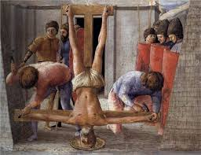
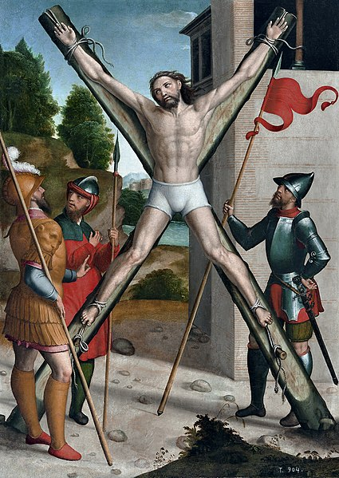
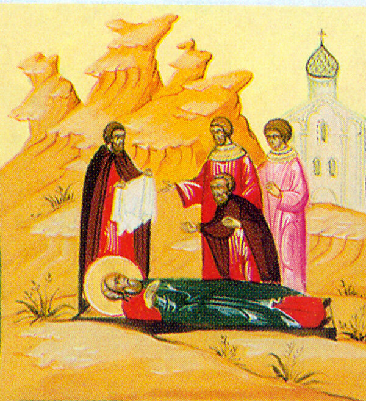
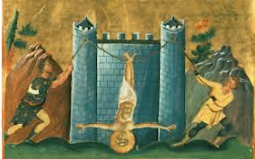
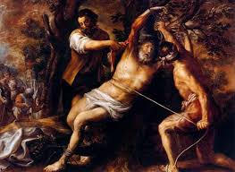
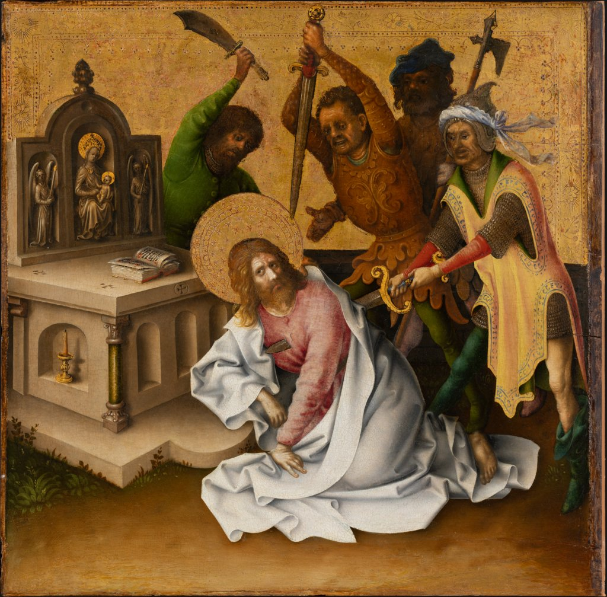
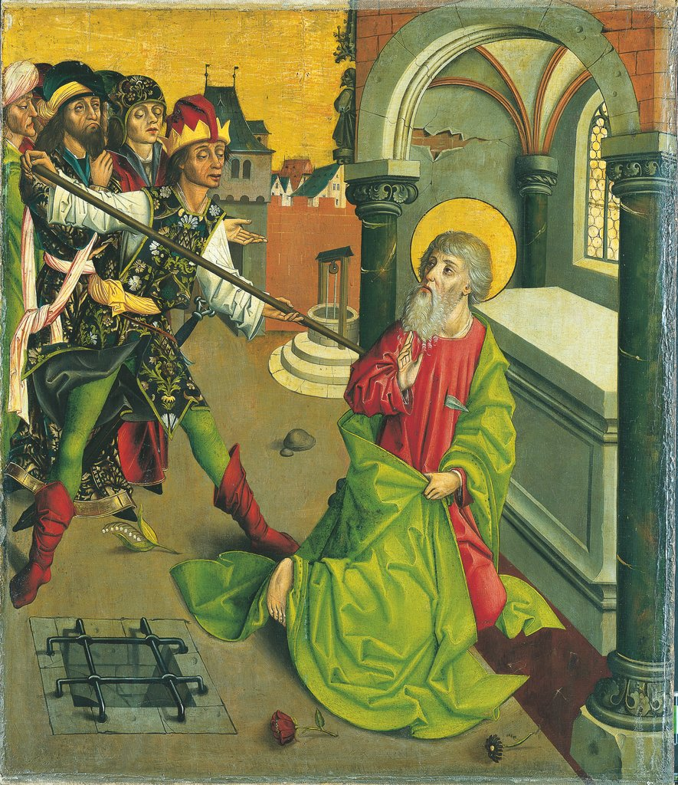
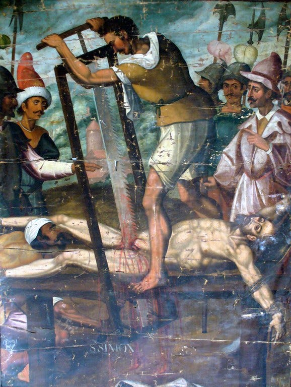
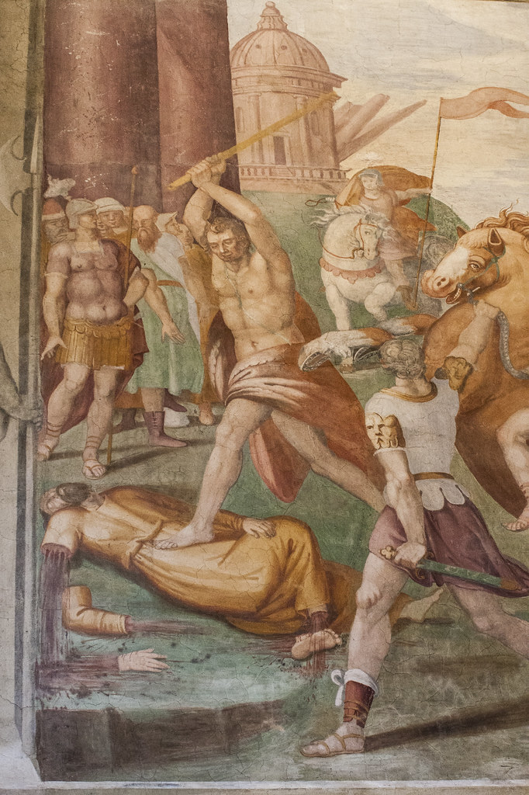
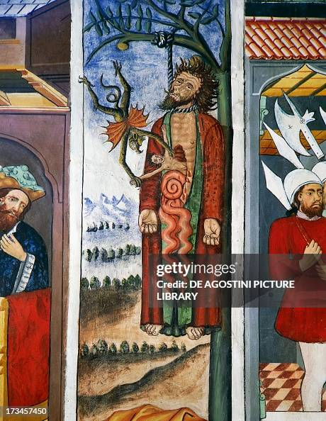

INTRODUCTION
The twelve disciples/apostles were ordinary men whom God used in an extraordinary manner. Among the twelve were fishermen, a tax collector, and a revolutionary. The Gospels record the constant struggles, failings, and doubts of these twelve men who followed Jesus Christ. After Jesus’ resurrection and ascension into heaven, the Holy Spirit transformed the disciples/apostles into powerful men of God who turned the world upside down.
The twelve apostles played a crucial role in spreading the Gospel and laying the foundation of the early Christian Church. They traveled to various regions, performed miracles, converted thousands, and faced persecution. The apostles suffered greatly for their faith and, in most cases, met violent deaths because of their bold witness and faith in Christ.
The first twelve apostles of Jesus Christ were:
- Simon Peter
- James (son of Zebedee)
- John (son of Zebedee)
- Andrew (brother of Peter)
- Philip
- Bartholomew (also called Nathanael)
- Matthew (the tax collector, also called Levi)
- Thomas (also called Didymus)
- James (son of Alphaeus)
- Simon (the Zealot)
- Thaddaeus (also called Judas, son of James, or Lebbaeus)
- Judas Iscariot (who later betrayed Jesus)
Below is an explanation of how the twelve apostles died.
DEATH OF THE TWELVE APOSTLES
Peter

Peter, originally named Simon, was a fisherman from Bethsaida in Galilee (John 1:44) and later lived in Capernaum. He was called by Jesus to be a "fisher of men" (Matthew 4:18-19) and was recognized as the leader of the apostles. Peter’s exact birth date unknown, but likely between 1 BC and 10 AD.
Peter was martyred in Rome in Italy about 66 AD, during the persecution under Emperor Nero. His execution was ordered by the Roman Emperor Nero, who blamed the city's Christians for a terrible fire that had ravaged Rome. Peter was crucified upside down at his request because he did not feel worthy to die in the same manner as his Lord.
Andrew

Andrew was the brother of Simon Peter and was originally a disciple of John the Baptist before following Jesus. He was born in Bethsaida, Galilee around 6- 10 AD. He is known for introducing Peter to Jesus. He played a crucial role in spreading Christianity, particularly in Greece and Asia Minor.
Andrew was martyred in Patras, Greece around 60 AD on an X-shaped cross, called a "crux decussata" or "saltire" for continuing to preach Christianity after being ordered to stop by the Roman governor. Andrew is believed to have requested the X-shaped cross because he thought he was unworthy to be crucified on the same type of cross as Jesus.
James (son of Zebedee)

James, the son of Zebedee was a fisherman born in Bethsaida, Galilee around 3-5 AD. He was referred to as James the Greater to distinguish him from another apostle named James, called James the less. He was one of the innermost circles of Jesus. He was a faithful disciple who was willing to suffer and die for his faith and was a promising leader of the church in Jerusalem.
James was beheaded by King Herod Agrippa I as recorded in the New Testament (Acts 2: 1-2). He was martyred in Jerusalem of Judea around 44 AD on the feast of Passover by King Herod (Agrippa I) who was a major persecutor of the Church and was ready to do anything to please the status quo of the religion of the Jews.
John

John was the younger brother of James and one of Jesus’ closest disciples. He was born in Bethsaida, Galilee around 6 AD. He was referred to as the “beloved disciple” and was present at key moments in Jesus’ ministry, including the Transfiguration and the Crucifixion. After Jesus' resurrection, John played a central role in the early church, particularly in Ephesus and is said to have taken care of Mary the mother of Jesus in his home. He was exiled to the island of Patmos under Emperor Domitian in the middle 90s, where he wrote the Book of Revelation.
John died in Ephesus, Asia Minor (modern-day Turkey) around 95-100 AD. Unlike the other apostles, John did not die a martyr; John was the only one of the apostles generally thought to have died a natural death from old age, though he endured severe persecution, including imprisonment and possible attempts on his life. According an early Latin tradition, he miraculously survived being boiled in oil before being banished to the island of Patmos.
Philip

Philip was one of the first disciples to follow Jesus. He was from Bethsaida, Galilee and was born around 5 AD. He introduced Nathanael (Bartholomew) to Jesus and later was actively involved in missionary work. Tradition holds that Philip preached in Asia Minor, particularly in Phrygia and Hierapolis (Turkey). He was known for performing miracles and converting many to Christianity.
However, his ministry led to intense opposition, and he was ultimately crucified or hanged upside down in Hierapolis around 80 AD under Emperor Domitian. During his crucifixion, an earthquake struck and knocked everyone to the ground, Philip prayed for those who had crucified him, and the people demanded that the apostles be released. Some accounts state he was stoned before his death. His unwavering faith and efforts significantly contributed to the spread of Christianity in the region.
died in Ephesus, Asia Minor (modern-day Turkey) around 95-100 AD. Unlike the other apostles, John did not die a martyr; John was the only one of the apostles generally thought to have died a natural death from old age, though he endured severe persecution, including imprisonment and possible attempts on his life. According an early Latin tradition, he miraculously survived being boiled in oil before being banished to the island of Patmos.
Bartholomew

Bartholomew, also known as Nathanael, was introduced to Jesus by Philip. He was from Cana in Galilee and was born around 6 AD. He was known for his deep faith and early skepticism, famously asking, "Can anything good come out of Nazareth?" (John 1:46). After witnessing Jesus’ miracles and resurrection, he became a committed disciple. According to tradition, he preached in India, Armenia, Mesopotamia, and parts of Asia Minor.
His martyrdom in Armenia involved being flayed alive before being beheaded, a testament to his unwavering commitment to spreading the Gospel. He died around 70 AD in Armenia under the command of the Armenian king, Astyages. He was flayed alive meaning that his skin was removed while he was still alive and then beheaded. His relics were supposedly taken to the Church of St. Bartholomew-in-the-Tiber, Rome. There are various accounts of how he met his death as a martyr for the gospel.
Matthew

Matthew, also known as Levi, was a tax collector before he became one of Jesus’ disciples. He was from Capernaum in Galilee and was born around 6-10 AD. His profession made him unpopular among his fellow Jews, but Jesus called him to follow Him, showing that the Gospel was for all people, regardless of their past. Matthew is traditionally credited with writing the Gospel of Matthew, which presents Jesus as the promised Messiah and emphasizes His teachings. After Jesus' resurrection, Matthew dedicated his life to preaching and evangelizing in Ethiopia, Persia, Parthia and other regions.
His martyrdom, either by stabbing or burning, reflects the intense opposition faced by early Christian missionaries. He died around 60- 70 AD in Ethiopia. According to tradition, Matthew was killed by a soldier on the orders of an Ethiopian king who wanted to marry his niece, who was a nun and the bride of Christ and Matthew rebuked the king for his lust, and the king ordered his bodyguard to kill Matthew. According to tradition, Matthew was killed while celebrating Mass in Ethiopia. Some say that Matthew was stabbed to death in Africa others say he was burnt to death.
Thomas

Thomas, also known as Didymus (meaning "twin") was born in Galilee around 6 AD and is best known for initially doubting Jesus' resurrection until he saw and touched His wounds. His doubt turned into strong faith, and he played a significant role in spreading Christianity. According to tradition, he traveled to India, where he preached the Gospel and established Christian communities.
His ministry faced strong resistance, and he was ultimately martyred by being pierced with spears in Chennai (Mylapore), India around 72 AD at the orders of a local king. Today, he is venerated as the patron saint of India and remembered for his deep faith and missionary zeal.
James (Son of Alphaeus)

James, son of Alphaeus, also known as "James the Less," to distinguish himself from James son of Zebedee was one of the more obscure apostles. He was born in Galilee around 3-5 AD. He is believed to have played a significant role in the early church in Jerusalem. He is one of at least three James referred to in the New Testament. There is some confusion as to which is which, but this James is reckoned to have ministered in Syria. Early Christian traditions suggest that he preached in Judea and Egypt.
The Jewish historian Josephus reported that he was stoned and then beaten to death with a club, possibly instigated by Jewish authorities who opposed his teachings. He died in Jerusalem, Judea around 62 AD. According to tradition, James was preaching to a group of Jews in Jerusalem who became angry and seized James. They brought James before the emperor Claudius and brought false witnesses who charged James with hindering people from obeying the emperor. Claudius ordered James to be stoned to death and the Jewish leaders carried out the punishment.
Simon, The Zealot

Simon the Zealot was one of the less-documented apostles, known for his passionate devotion to Jesus. He was born in Galilee around 1–10 AD. The term "Zealot" suggests he may have been part of a Jewish nationalist movement before following Christ. After Jesus’ resurrection, Simon preached the Gospel in Egypt, Persia, and possibly North Africa.
According to tradition, Simon was sawn in half with a saw for his strong faith. He died in Persia or modern-day Syria around 65-107 AD. As the story goes, he ministered in Persia and was killed after refusing to sacrifice to the sun god. Some accounts have him being crucified while others have him killed with a spear.
Thaddaeus (Jude, Son of James)

Thaddeus, also known as Jude or Judas son of James or Lebbaeus, was one of the lesser-known apostles. He was born in Galilee around 1–10 AD. He was often identified as the author of the Epistle of Jude in the New Testament. After Jesus’ resurrection, Thaddaeus preached the Gospel in Judea, Samaria, Mesopotamia, and Persia. He is believed to have performed many miracles, including healing a king of Edessa.
His ministry in Persia ultimately led to his martyrdom around 65-80 AD, where he was beaten to death with a club alongside Simon the Zealot for refusing to renounce his faith. Some accounts say he was crucified while others say he was captured by pagans. Thaddeus' remains/relics were taken to Rome and placed in St. Peter's Basilica.
Judas Iscariot

Judas Iscariot was one of the twelve disciples chosen by Jesus, known for betraying Jesus for thirty pieces of silver. He was born in in Kerioth, Judea around 10 AD. He was the group’s treasurer and had a reputation for dishonesty.
After realizing the gravity of his betrayal, Judas attempted to return the silver to the Jewish authorities but was rejected. Stricken with guilt, he committed suicide by hanging (Matthew 27:3–10). Later, his body fell and burst open due to decomposition or an accident. He died in Jerusalem around 30-33 AD. His place among the apostles was later filled by Matthias.